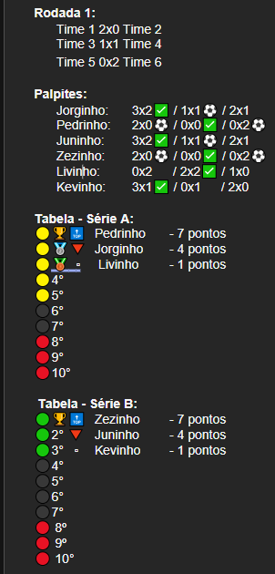

INFORMAÇÕES GERAIS
- A temporada não tem data fixa para início e término, acaba a temporada quando acaba todos os campeonatos, então pode variar.
-
Existem cinco (5) campeonatos que acontecem durante a temporada. Cada campeonato tem seu nível de importância, o que serve de critério para algumas coisas da temporada. A ordem de importância desses campeonatos é:
- 1º - Liga dos palpiteiros;
- 2º - Supreme league;
- 3º - Copa dos palpiteiros;
- 4º - Exclusive cup;
- 5º - Supercopa dos palpiteiros;
(As informações sobre cada campeonato se encontram nos tópicos 2, 3, 4, 5 e 6).
- O que irá definir se terá palpites no dia, ou não, será a grade de jogos do dia, ou seja, pode acontecer de algum dia não ter palpite para nenhum dos cinco (5) campeonatos. O mesmo funciona para a quantidade de jogos para palpitar.
- Pode acontecer de ter dois (2) ou mais campeonatos “rolando” no mesmo dia, então fique atento para não perder nenhum palpite.
- Os jogos serão sempre mandados com antecedência, para que todos consigam palpitar.
- Não é obrigatório palpitar todos os jogos do dia de uma vez só, mas os palpites devem ser feitos antes do início do jogo. (Os horários dos jogos são sempre informados).
- Em rodadas de liga o palpiteiro pode mudar seu palpite mesmo depois de enviado, se o jogo ainda não estiver começado é claro. Em confrontos diretos, se o primeiro jogo já estiver começado, nenhum palpite já enviado pode ser modificado.
-
Existem punições para aqueles que ficarem sem palpitar todos os jogos da rodada (De qualquer um dos campeonatos):
- Três (3) vezes, consecutivas ou não → Menos cinco (5) pontos na liga;
- Cinco (5) vezes, consecutivas ou não → Desclassificado das copas (Exceto nas que estiver na final);
- Quatro (4) vezes consecutivas → Eliminado da temporada;
Por isso, caso o palpiteiro precise se ausentar por algum motivo, o mesmo deve comunicar à algum membro da liderança.
- Nós trabalhamos com times e campeonatos previamente selecionados (Confira quais são no tópico 7).
- Os palpiteiros só devem palpitar e se divertir, todo o resto é de responsabilidade da liderança.
- Caso surgir alguma dúvida, entre em contato com algum membro da liderança.
LIGA DOS PALPITEIROS
-
Funcionamento:
- É uma liga no estilo pontos corridos, sem existência de confronto direto entre os palpiteiros.
- São quinze (15) rodadas.
- Todos participam.
- Apesar de existir mais de uma série, os jogos da rodada são os mesmos para todos.
- A tabela é atualizada no final de cada rodada.
- Na tabela, antes do nome do palpiteiro, sempre haverá um símbolo indicando se ele ganhou posição (🔝), perdeu posição (🔻) ou permaneceu na mesma posição (🔲).
-
Na série A,
- Os cinco (5) primeiros colocados se classificam para a Exclusive Cup (🟡) e os três (3) últimos são rebaixados (🔴).
Nas outras séries,
- Os três (3) primeiros garante o acesso (🟢) e os três últimos são rebaixados (🔴).
A quantidade de rebaixados e de acessos entre as séries pode variar de temporada pra temporada por conta da quantidade de palpiteiros participantes, podendo assim existir um sistema de repescagem se necessário (🟣).
- Na Série A os três (3) primeiros colocados recebem premiação (🏆 🥈 🥉). Nas outras séries somente o primeiro colocado (campeão) recebe premiação (🏆).
-
Pontuação:
- Se o palpiteiro acertar o placar exato da partida ele ganha um ⚽ que equivale a 3 pontos. Se ele não acertar o placar exato, mas acertar qual o time vencedor da partida ou se dará empate ele ganha um ✅ que equivale a 1 ponto.
- Se o palpiteiro pontuar em todos os jogos da rodada, seja com ⚽ ou ✅, ele ganhará um (1) ponto bônus. Se o palpiteiro acertar todos os placares exatos ⚽ da rodada ele ganha três (3) pontos bônus.
-
Exemplo Visual:
-
Os critérios de desempate são, na seguinte ordem:
- 1 - Quem menos vezes ficou sem palpitar todos os jogos de uma rodada;
- 2 - Quem tiver mais ⚽ na Liga da temporada;
- 3 - Quem tiver mais ⚽ no geral da temporada (Liga + Copas);
- 4 - Rodada de desempate (Apenas caso haja empate na última rodada e seja alguma disputa, como: título, pódio, classificação para Exclusive Cup, classificação para Supreme League, rebaixamento e acesso, fora isso será por quem já estava na frente, pois, não fará diferença).
A rodada de desempate é em forma de confronto (Quem fizer mais pontos vence).
-
Símbolos:
- 🏆 → Campeão.
- 🥈 → Segundo lugar.
- 🥉 → Terceiro lugar.
- ⚽ → Placar correto.
- ✅ → Placar parcial correto.
- ⭕ → Ainda não palpitou.
- 🚫 → Não pode mais palpitar.
- 🔝 → Ganhou posição.
- 🔻 → Perdeu posição.
- 🔲 → Permaneceu na posição.
- 🟡 → Exclusive Cup.
- 🔴 → Rebaixamento.
- 🟢 → Acesso.
- 🟣 → Repescagem.